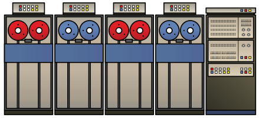
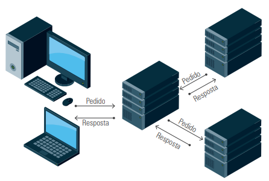
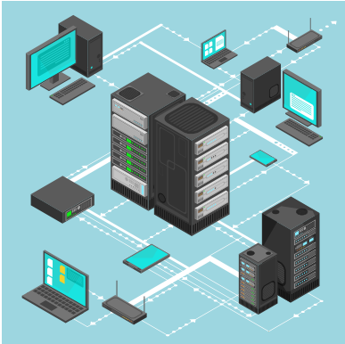

A evolução dos semicondutores e da microeletrônica permitiu o surgimento dos mainframes: computadores robustos capazes de processar grandes volumes de dados e atender milhares de usuários simultaneamente.
O primeiro mainframe surgiu em 1964, com o lançamento do IBM System/360, marcando uma revolução na história da computação organizacional.
O ambiente de mainframe utilizava diversos terminais conectados, onde os dados eram inseridos via teclado e exibidos em vídeo ou impressora, enquanto todo o processamento ocorria centralmente no mainframe. Esses terminais eram \"burros\", sem capacidade própria de processamento.
Componentes dos primeiros mainframes:
Principais características dos mainframes:
Com a evolução da microeletrônica, surgiram computadores pessoais mais acessíveis, dando origem ao conceito de desktop e espalhando as informações por toda a organização, o que demandou uma nova arquitetura de TI: o modelo cliente-servidor.
A arquitetura cliente-servidor divide o processamento entre o servidor (armazenamento e processamento central) e o cliente (interface amigável para o usuário).
No modelo cliente-servidor:
Embora apresente vantagens, a arquitetura cliente-servidor também traz desafios, como o aumento do custo de hardware e software.
Exemplos de utilização da arquitetura cliente-servidor:
Com o aumento exponencial da geração de dados (Big Data) e o surgimento da Internet das Coisas (IoT – Internet of Things), a combinação de tecnologias tornou-se indispensável para atender às demandas modernas.
Novas tecnologias surgidas:
A infraestrutura moderna de TI envolve mainframes poderosos, servidores cliente-servidor, redes de comunicação avançadas, serviços em nuvem e integração com dispositivos de usuários locais ou remotos.
Recomenda-se que veja a aula narrada na aula 2 da unidade 1.
A construção da infraestrutura de TI deve ser baseada em uma análise criteriosa das necessidades do negócio.
O mainframe continua sendo uma solução estável e confiável para aplicações de missão crítica, como em bancos. Já ambientes que exigem maior flexibilidade e atualização constante podem optar por servidores baseados em sistemas operacionais abertos, como Linux.
A tendência atual é a formação de infraestruturas híbridas, onde coexistem mainframes, servidores cliente-servidor, virtualização e computação em nuvem, oferecendo o equilíbrio ideal entre segurança, flexibilidade, escalabilidade e redução de custos.